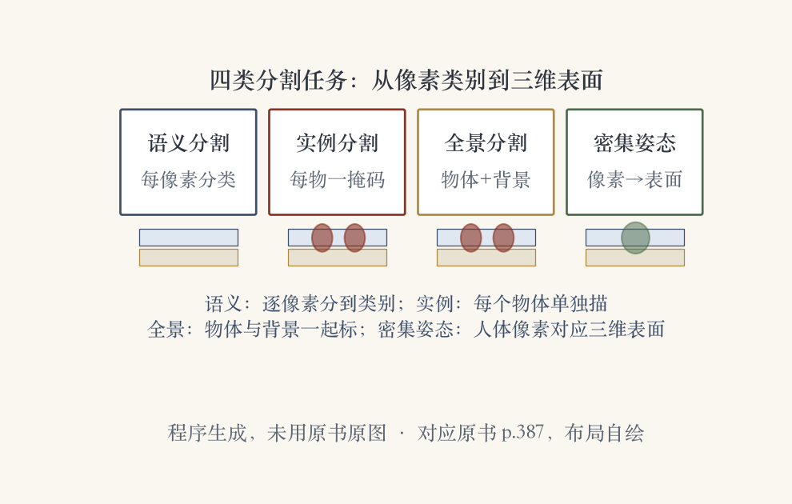
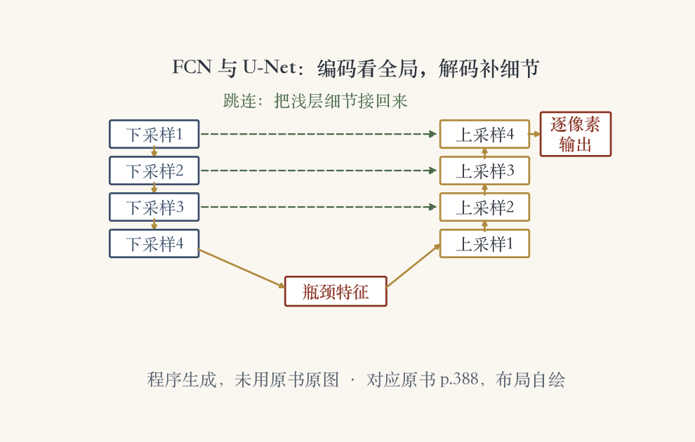
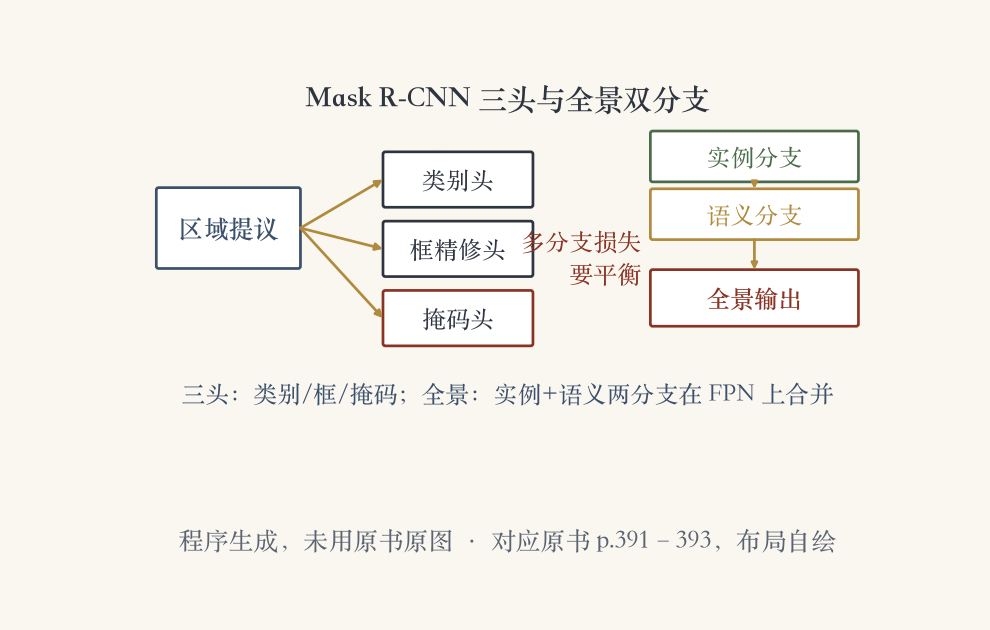

开场 · 四类分割任务
给每个像素贴类别
- 语义分割：逐像素分到类别。
- 实例分割：每个物体一张掩码。
- 全景分割：物体和背景一起标。
- 密集姿态：人体像素对应身体部位。
依据：原书第 387 页

四类分割任务对照：语义分割、实例分割、全景分割、密集姿态｜程序生成，未用教材或论文原图
逐像素标注 · 四类任务对照
每个像素先表态，邻居再商量
- 基本做法：给每个像素标一个类别。
- 四类任务都建立在这层像素标注上。
- 老办法：能量最小化或贝叶斯推断，即 CRF。
- TextonBoost：一元势打分，成对势看梯度。
依据：原书第 387 页
为什么更难
识别和精确边界要同时做
通用识别里更有挑战的版本
分类问有什么，检测问在哪
经典路线 · 纹理布局与条件随机场
十七个滤波器，三十类纹理基元
- 十七个方向滤波器组，聚成三十类 texton。
- 偏移矩形区域加联合提升，得到一元势。
- LayoutCRF：多实例、处理遮挡。
- Hoiem 等人再接进完整三维模型。
依据：原书第 387–388 页
从局部到整图
一元势：颜色、位置、纹理布局
成对势：相邻像素颜色梯度
LayoutCRF：多实例加遮挡
再往上接三维场景模型
全卷积与 U-Net
编码看全局，解码补细节
- FCN：一个网络直接做逐像素标注。
- 早期分辨率差、边界松。
- 末端 CRF、反卷积上采样、U-Net 跳连。
- 跳连把没丢的浅层信息接回来。
依据：原书第 388 页

FCN 与 U-Net 流水线：编码器、解码器、跳连、逐像素输出｜程序生成，未用教材或论文原图
现代架构 · 多尺度与多头
多尺度聚特征，多头分工
- 现代分割常建在特征金字塔网络上。
- 自顶向下，把语义灌到高分辨率图。
- PSPNet 用空间金字塔池化聚多尺度。
- UPerNet 标类别、材质、部件和纹理。
依据：原书第 388–389 页
图 6.34 的四个头
场景头：做分类
物体与部件头：吃融合特征
材质头：看最细一层
纹理头：不参与微调
数据集 · 从几类到万物
标签越细，模型懂得越多
- 起步：MSRC 和 PASCAL VOC。
- Cityscapes 是城市街景。
- ADE20K：一百五十种类别和部件标签。
- Broden 联邦多数据集，扩到材质纹理。
依据：原书第 389–390 页
表 6.2 的数据集
MSRC / PASCAL VOC
Cityscapes：街景
ADE20K：150 类
Broden：物体加材质
医学分割 · 定量分析
先把组织分出来
- 医学分割把解剖组织分出来。
- 图 4.21：二值图割分出肝脏。
- 图 6.35：脑部扫描的肿瘤分割。
- 从手工描边，到 MRF、随机森林、深度学习。
依据：原书第 390–391 页
一路怎么变
早期：一片片 X 光片手工描边
然后：马尔可夫随机场、随机森林
后来：转向深度学习
MICCAI 会议与医学图像期刊
实例分割 · 旧路线
先认出来，再把形状套回去
- 找出所有相关物体，给可见区域掩码。
- 已知刚体：三维模型反投影回场景。
- 这条路只对已知的三维模型管用。
- 人用柔性模型；可变类按特征投票。
依据：原书第 391 页
三条旧思路
刚体：模型反投影
人体：预分割再拼装
高度可变类：位置尺度投票
实例分割 · 深度二阶段
三个头，多一条画轮廓
- 区域提议接卷积第二阶段，出实例掩码。
- 突破出现在 Mask R-CNN。
- 沿用 Faster R-CNN 的区域提议网络。
- 框精修、分类之外，再加掩码分支。
依据：原书第 391–392 页
三头并行 · 全景双分支
损失要平衡，分支还能加
- 图 6.36a：三个分支分别出类别、框、掩码。
- 多分支多输出，每条损失权重仔细平衡。
- 还能加关键点掩码分支，做人体关键点。
- 更强骨干继续涨分；COCO+LVIS 看最新结果。
依据：原书第 392 页

Mask R-CNN 三头与全景双分支：类别、框、掩码、全景输出｜程序生成，未用教材或论文原图
实例分割 · 边界指标
面积对了，轮廓还要贴
- 掩码可换成随时间演化的闭合轮廓，snakes。
- Peng 等人在 2020 年这么做过。
- Boundary IoU 用边界交并比，替代 Mask IoU。
- Cheng、Girshick 等人 2021 年提出。
依据：原书第 392 页
两种看法
Mask IoU：面积对不对
Boundary IoU：轮廓贴不贴
面积分对了，边还可能毛糙
全景分割 · 物体与背景
数清楚，还要铺满
- 语义回答每像素是什么，实例回答几个。
- 全景：物体正确分开，背景正确标类。
- PQ 指标要同时平衡两边。
- COCO 加了全景任务；Panoptic FPN 双分支。
依据：原书第 392–393 页
全景怎么算
所有物体正确分割
剩余背景正确标类
PQ 平衡语义与实例
FPN 上加实例、语义两分支
智能修图 · 场景补全
找一张本来就长这样的图
- Photo Clip Art 分割行人，贴进用户照片。
- 场景补全：擦掉一大块，再找像素来源。
- Hays 和 Efros：先算 gist 找相近图。
- 图割最小化梯度差，Poisson 融合贴回。
依据：原书第 394 页
补图的四步
擦除：去掉一大块
找图：颜色构图相近
对齐：图割最小梯度差
融合：Poisson 贴回
单图三维 · 照片立起
把照片折成能立起来的模型
- Criminisi 等人检测消失点，用户画墙。
- Hoiem 等人：逐像素判地面、垂直面、天空。
- 超像素分组，沿边界折成平面，去掉天空。
- Saxena 等人直接推每像素的深度和朝向。
依据：原书第 395 页
三种做法
消失点 + 用户画墙
自动照片立起：pop-up
直接回归深度与朝向
姿态估计 · 关键点与密集姿态
从几个关节到整张皮
- 姿态是头、躯干、四肢的位置和朝向。
- Felzenszwalb 和 Huttenlocher 2005 年开创。
- 深度网络找关键点；OpenPose 实时多人。
- DensePose：每像素对应三维表面，五万人标注。
依据：原书第 395–396 页
两种粒度
关键点：只标几个关节
DensePose：整个人贴皮
每个像素知道贴在哪一块
小结 · 移交下一集
从像素类别到三维表面
- 四类任务：语义、实例、全景、密集姿态。
- 方法线：TextonBoost → FCN/U-Net。
- 再到 Mask R-CNN 三头、Panoptic FPN 双分支。
- 下一集：视频理解，读时间轴上的人和动作。
依据：原书第 396 页；本集综述
一条主线
像素级分类
每个物体一个掩码
物体与背景一起标
人体像素映射到三维表面